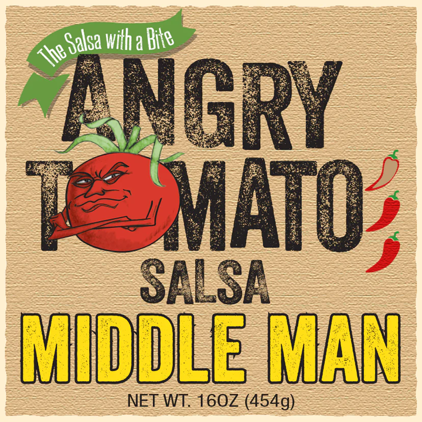
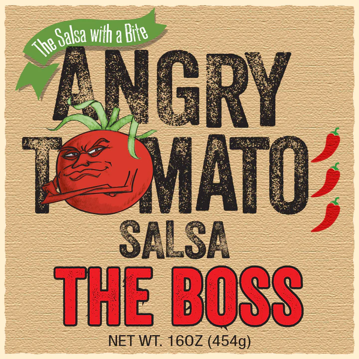

Гострий томат
=
Злий томат
В Сальсі головний - Томатний соус!


Я завжди буду займати особливе місце у ваших серцях
Cніданок Буенос Діас:
Поживна та пекуча страва з додаванням нашої Сальси!
Сальса
— соус мексиканської кухні.
Різновид холодної
страви, часто пікантного смаку з різноманітними подрібненими складниками та приправами.
Інгредієнти:
- 1 склянка злої томатної сальси
- 1 чашка консервованої чорної квасолі, промитої та висушеної
- 10 кукурудзяних коржів (6 дюймів), нарізаних на смужки шириною 1 дюйм
- 1 склянка тертої суміші мексиканських сирів
- 2 великі яйця
- 2 великі яєчні білки
- 1 склянка 2% молока
- 1 склянка сметани
- 2 зелені цибулини, тонко нарізані
- 1/2 чайної ложки солі
Як готувати?
- У невеликій мисці змішайте Angry Tomato Salsa та квасолю. Викладіть третину смужок тортильї в змащену маслом форму розміром 11x7 дюймів та половину суміші сальси. Повторюйте шари. Зверху викладіть смужки тортильї, що залишилися.
- У великій мисці збийте яйця, яєчні білки, молоко, сметану, цибулю та сіль; залити зверху. Посипати сиром, що залишився. Охолодіть, накривши принаймні на 8 годин або на ніч.
-
Обов'язково: Вийміть із холодильника за 30 хвилин до випічки.
- Розігрійте духовку до 350 °
- Випікати, накривши, 30 хвилин
- Розкрити; випікати на 10-15 хвилин довше або доки ніж, вставлений у центр, не виходитиме чистим.
Харчова цінність:
1 шт.: 321 калорія, 13 г жирів (7 г насичених жирів),
104 мг холестерину, 729 мг натрію,
35 г
вуглеводів (7 г цукрів, 4 г клітковини), 16 г білків.